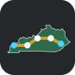

AI Basics
Plain-English sessions on prompts, models, privacy, citations, scams, and useful everyday workflows.

KYAI AI for KentuckyFrom Paducah to Pikeville
AI for Kentucky
A Commonwealth-first hub for free AI workshops, practical training, local research, public policy, and the people moving Kentucky forward.
Training
KYAI starts with hands-on sessions built for Kentucky rooms: libraries, high schools, community colleges, workforce boards, local chambers, and city halls.
Bluegrass classrooms, Appalachian small businesses, Louisville labs, Western Kentucky energy corridors, and Frankfort policy rooms all need a seat at the same table.
Plain-English sessions on prompts, models, privacy, citations, scams, and useful everyday workflows.
Practical training for small businesses, nonprofits, job seekers, and teams learning AI-enabled tools.
Community conversations on schools, public services, policy, rural access, ethics, and opportunity.
Collaborative sessions for datasets, maps, guides, local explainers, and simple public-interest tools.
Kentucky AI Tracker
Latest Kentucky AI intelligence
Auto-generated from public news and research indexes, then shaped around what matters for Kentucky communities. Each item links back to the original source for review.
Daily brief
Watchlist
Community board
Open source nonprofit
KYAI can grow into a shared home for workshop materials, local datasets, explainers, case studies, event notes, and issue tracking. The default posture is simple: publish useful work, invite review, and make it easy for Kentuckians to contribute.
Read practical guides and attend free sessions around Kentucky-relevant AI topics.
Submit local AI news, events, public meetings, research, grants, and school updates.
Help maintain open workshop decks, resource directories, civic tools, and local explainers.
Join the conversation
Tell KYAI where you are in Kentucky and how you want to plug in. This first version saves interest locally and prepares the site for a real CRM, email list, or GitHub issue flow.